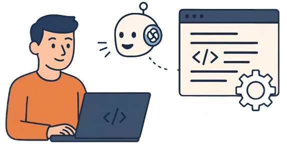

¿Qué es?
Según Google Cloud, el vibe coding es una práctica emergente de desarrollo de software que usa
Inteligencia Artificial (IA) para generar código funcional a partir de instrucciones de lenguaje
natural, lo que acelera el desarrollo y hace que la creación de apps sea más accesible,
especialmente para quienes tienen poca experiencia en programación.
El término, acuñado por el investigador de IA Andrej Karpathy a principios del 2025, describe un flujo
de trabajo en el que el rol principal cambia de escribir código línea por línea a guiar a un asistente
de IA para generar, definir mejor y depurar una aplicación a través de un proceso más conversacional.
Esto te permite pensar en el panorama general o en el objetivo principal de tu app, mientras que la IA
se encarga de escribir el código real.
En la práctica, vibe coding se aplica generalmente de dos maneras principales:
- Vibe coding "puro": En su forma más exploratoria, un usuario podría confiar plenamente en que
los resultados de la IA funcionarán como se espera. Como lo describió Karpathy, esto es similar a
"olvidar que el código existe", lo que lo hace más adecuado para la ideación rápida o lo que él llamó
"proyectos de fin de semana desechables", en los que la velocidad es el objetivo principal.
- Desarrollo asistido por IA responsable: Esta es la aplicación práctica y profesional del
concepto. En este modelo, las herramientas de IA actúan como un poderoso colaborador o "programador
en pareja". El usuario guía a la IA, pero luego revisa, prueba y comprende el código que genera, y
asume la propiedad total del producto final.
¿Cómo funciona?
Vibe coding opera en dos niveles: El ciclo iterativo de bajo nivel de perfeccionamiento del código y el
ciclo de vida de alto nivel de creación y de implementación de una aplicación completa.
El flujo de trabajo a nivel de código
Este es el ciclo ajustado de conversación que usas para crear y perfeccionar un fragmento de código
específico.
- Describe el objetivo: Comienzas con una instrucción de alto nivel en lenguaje sencillo. Por
ejemplo: "Crea una función de Python que lea un archivo CSV".
- La IA genera el código: El asistente de IA interpreta tu solicitud y produce el código
inicial.
- Ejecuta y observa: Ejecutas el código generado para ver si funciona como se esperaba.
- Proporciona comentarios y define mejor: Si el resultado no es el correcto o se produce un
error, puedes proporcionar nuevas instrucciones, como "Eso funciona, pero agrega un manejo de
errores para cuando no se encuentre el archivo".
- Repite: Este ciclo de descripción, generación, prueba y perfeccionamiento continúa hasta que
el código está completo.
El ciclo de vida de la aplicación
Este es el proceso más amplio de tomar una idea de alto nivel desde el concepto hasta una aplicación
implementada.
- Ideación: Describes toda la aplicación que quieres en una sola instrucción de alto nivel en
herramientas como Google AI Studio o Firebase Studio.
- Generación: La IA genera la versión inicial de la aplicación completa, incluida la IU, la
lógica de backend y la estructura de archivos.
- Perfeccionamiento iterativo: Pruebas la aplicación y usas instrucciones de seguimiento para
agregar nuevas funciones o cambiar las existentes.
- Pruebas y validación: Un experto humano revisa la aplicación para garantizar su seguridad,
calidad y exactitud.
- Implementación: Con una instrucción final o un solo clic, implementas la aplicación en una
plataforma escalable como Cloud Run.
Cómo aplicar el Vibe Coding en la práctica
IBM sugiere un proceso estructurado para implementar el Vibe Coding de forma efectiva en proyectos
reales:
-
Elegir una plataforma de asistente de IA: Selecciona una herramienta que se adapte a tus
necesidades, como Replit, Cursor o GitHub Copilot.
- Definir los requisitos: Escribe un prompt claro y detallado que describa qué deseas
desarrollar. Cuanto más preciso sea, mejores resultados obtendrás.
- Refinar el código: Revisa el código generado, pruébalo y ajusta el prompt según los
resultados.
- Revisión final y publicación: Evalúa el código optimizado y úsalo para el despliegue final
del proyecto.
Este flujo de trabajo demuestra que el Vibe Coding no busca eliminar la figura del programador, sino
potenciar su capacidad de crear con rapidez, precisión y creatividad.